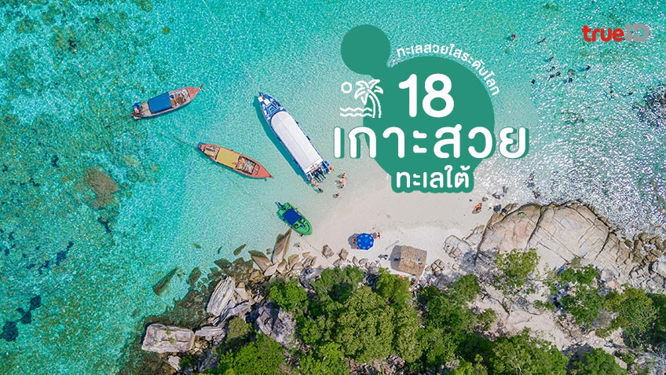
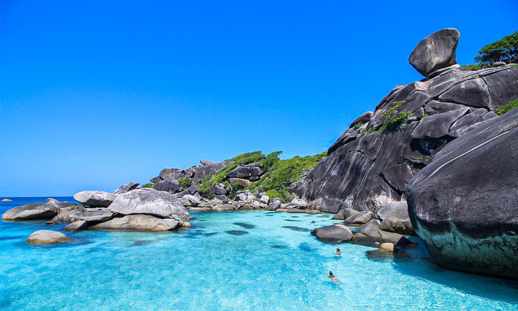

เปิดวาร์ป18 เกาะสวยๆ ในไทย ภาคใต้ ทะเลสวย ใสระดับโลก
เกาะสวย ๆ ในภาคใต้มีให้เลือกเยอะแยะมากมาย ซึ่งแต่ละเกาะต่างก็มีความโดดเด่นและเอกลักษณ์เฉพาะตัว แล้วจะเที่ยวที่เกาะไหนดี?คำถามยอดฮิตสำหรับนักท่องเที่ยวที่กำลังต้องการหาสถานที่คลายร้อนในฤดูร้อนที่ต้องนึกถึง หากเพื่อนๆ คนไหนที่ยังนึกไม่ออก เราได้รวบรวมเกาะที่มีทะเลสวย น้ำใส มีเอกลักษณ์ที่ไม่เหมือนใคร มีชื่อเสียงดังไกลระดับโลก จนนักท่องเที่ยวต้องมาเช็กอินมาให้เพื่อนๆ เก็บไว้เป็นลิสต์รายชื่อปักหมุดเตรียมเดินทางไปเที่ยวกัน
